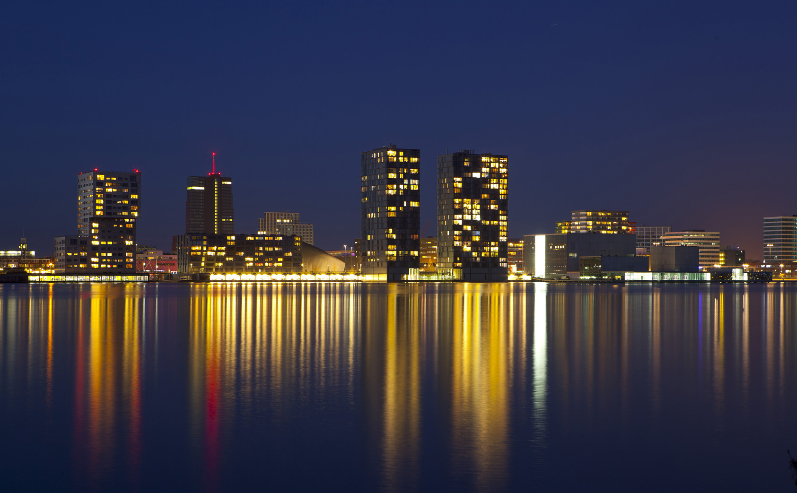
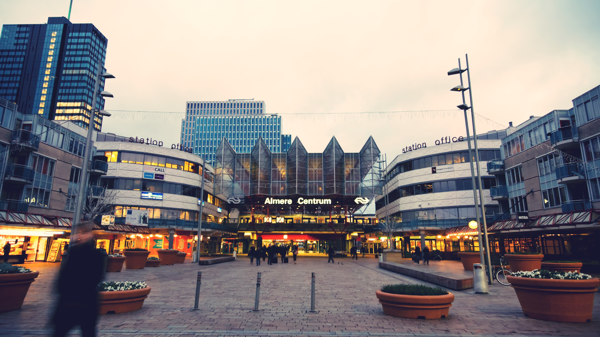

10 vooroordelen over Almere die voor eens voor altijd de wereld uit moeten
Als je aan mensen vertelt dat je in Almere woont, krijg je vaak te maken met veel onterechte vooroordelen. Je schiet dan in de verdediging, want je vind het nergens op slaan. De eerstvolgende keer dat dit gebeurt kun je een nieuwe tactiek kiezen: ze dit lijstje laten lezen. You're welcome.
1. Het is een lelijke stad Een erg subjectief oordeel natuurlijk, maar als je smaak ouderwets en historisch is, moet je inderdaad niet in Almere zijn. Toch komen er jaarlijks veel toeristen naar de stad om juist naar de vernieuwende architectuur te kijken en heeft ook elk modern gebouw hier een verhaal.

2. Het is ongezellig Uit onderzoek is gebleken dat het grootste deel van de Almeerders met plezier in deze stad woont. Zal wel meevallen met die ongezelligheid dan, toch?
3. Er is niets te doen Helemaal niet waar! Almere is van alle markten thuis: leuk winkelen, fijn wandelen, lekker fietsen, goed uit eten, grote clubs, succesvolle evenementen.
4. Er is geen natuur Als je denkt dat Almere alleen maar door Vinex-wijken bij elkaar gehouden wordt, heb je het mis. De Oostvaardersplassen met verschillende dieren zijn het paradepaardje van de stad, maar los daarvan kun je van het groen genieten in een van de vele parken, wandelend op de dijk in Almere Haven of tussen varen over een van de vele grachtjes.
5. Alle wijken lijken op elkaar Dat het allemaal modern is, is niet te ontkennen in zo'n jonge stad, maar toch heeft elke wijk zijn eigen karakter en eigen stijl. Omdat er nog steeds veel gebouwd wordt, verandert het aangezicht van Almere continue.
6. De bewoners 'lopen achter' "Wat moet je dáár nou?" vragen mensen vaak als je vertelt dat je in Almere woont, alsof het een verschrikkelijke plek is. Toch wonen er veel creatievelingen zoals succesvolle (mode)bloggers en fotografen die juist de trends bepalen.

7. Iedereen eet kapsalon Alsof de kapsalon die je bij een Turkse snackbar koopt in Almere is uitgevonden. Niet dus! Er zijn onwijs veel leuke restaurants in Almere die goed bezocht worden - ook door mensen van buiten de stad.
8. Veel tienermoeders Ooit was er een piek in de cijfers en het lijkt alsof je dat altijd blijft horen, terwijl inmiddels zelfs het streng gelovige Urk relatief een groter aantal tienermoeders huist dan Almere.
9. De mensen zijn niet aardig Alsof je dit ooit over alle inwoners van een stad kunt zeggen, maar ook dit is niet waar. Veel mensen die ooit vanwege dit vooroordeel de stad meden en er inmiddels wonen zijn ook om: het is mede door het grote aantal jongeren dat graag buiten komt een ontzettend sociale stad waar je snel nieuwe vrienden kunt maken.
10. Het is een onpersoonlijke stad Het is inmiddels dan wel een van Nederlands grootste steden - gemeten op het aantal inwoners - ergens lijkt het er soms net een dorp waarin iedereen elkaar lijkt te kennen. Vooral als je even doorpraat, blijk je altijd wel een paar gezamenlijke kennissen te hebben.